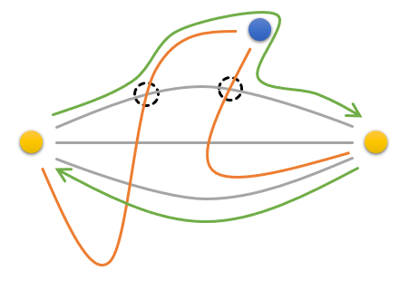
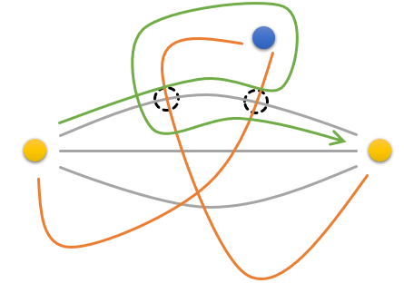

T1 环游
题意
给出一张$n$个点$m$条边的无向图和三个点$a,b,c$。你要找到一条从$a$出发，依次经过$b$和$c$，最后回到$a$的路径，使得除了$a$被经过两次以外，其它所有点至多只被经过一次。保证$a,c$之间存在三条点不相交的路径。输出方案。
题解
我们先考虑这样一个问题：如何找到这三条点不相交的路径？
以$a$为源点，$c$为汇点，限制除了$a,c$之外每个点的流量不能超过$1$，如果最大流不小于$3$，那么$a,c$之间就有三条点不相交的路径。
为了保证每个点流量不能超过$1$，将每个点拆为两个点，入点向出点连一条容量为$1$的边。跑一边网络流之后再把那些流满的正向边拿出来$dfs$就可以得到这三条路径。
最终的答案显然也是从$b$出发，终点分别为$a,c$的两条不相交路径。同样，我们也用网络流求出这两条路径。
考虑下图的情况：

黄色的两个点分别为$a,c$，蓝色的点为$b$。灰色的边是我们找到的三条从$a$到$c$的路径，橙色的边是两条从$b$出发的路径。
如果这两条路径与$a,c$的三条路径有交，那么我们可以直接找到最后一个交点，然后将这条路径“扳过来”，这样每条路径至多与三条路径之中的一条有交，这三条路径一定至少有一条路径没有被占用，从$c$回到$a$的时候就可以使用这条路径。
另外，如果两条扳过之后的路径与三条路径中的某一条同时有交，会有一种特殊情况

这条路径是不合法的，但是它可能会被我们找到。
解决方法是直接交换这两条路径之后再做一遍，做完之后判断得到的序列是否合法就行了。
但是这种做法巨难写（而且我还写炸了
一种非常偷懒的做法是，跑出这几条路径之后将图简化，仅留下这些关键路径上的点，然后爆搜，它甚至比上面那个做法跑得快。
1 |
|
T2 电梯
题意
有一个bitset，里面有$n$个位置为$1$，共有$h$个位置，你可以进行$\frac{h}{n}$次操作，每次你会选择一个$a$，然后将当前值或上一开始的bitset左移$a$的值。注意不能溢出。$a$序列必须递增，并且$a_1=0$。问有多少个合法的$a$的序列使得最后存在一个bitset使得得到的值是$2^h-1$。保证$h$被$n$整除。
题解
容易发现这样一个事实：一个合法的$a$序列唯一对应一个bitset。因为一个bitset可以唯一确定一种方案：每次找到当前最靠前的$0$的位置，然后将bitset的最高位左移到这个位置做一遍或，由于$a$序列递增因此方案是唯一的。
因此对$a$序列的计数等价于对合法bitset的计数。
写个暴力跑一下$h=16,n=4$会发现存在如下几种情况（左边是最低位）：
1000100010001000
1111000000000000
1010000010100000
1100000011000000
1010101000000000
1100110000000000
我们来分析一下第三个序列。
它会先进行一次右移，变成1111000011110000，然后接下来分别右移$4$次和$5$次变成全集，相当于把这一步的$1$全部向右复制一遍。
对于最后一个序列也是同理，先进行两次右移变成1111111100000000，然后用类似刚刚的操作复制一遍所有的$1$。
因此我们可以大胆猜想：最终的序列一定满足下列的条件：
可以被划分为长度相等的若干段，每一段里面$1$的分布情况完全相同，我们将这样划分出的段称为“大段”。
每一大段又可以分为若干长度相等的小段，只有第一个小段有$1$，其它小段都为$0$。
比如1010000010100000这个序列，首先它可以被划分为两个大段10100000，然后这一段又可以被划分为两个小段1010与0000，第一个小段相当于子问题。注意如果我们继续划分1010，那么接下来每次都必须至少划分出两个大段，否则这一次的小段可以被划分得更小。另外，每个大段也必须至少被分为两个小段，否则大段也可以被分得更小。
举两个例子：
对于1100000000000000，假设在第一次划分中，大段是整个序列，小段为11000000，第二次划分中大段为11000000，小段为1100，这样等价于在第一次划分中直接划分成四个小段，第一个小段为1100。
对于10101010，我们不能先分为两个大段1010，每个大段内仅有一个小段也就是1010本身，这样等价于直接分成$4$个大段10。
然后可以根据这两个条件写出一个看起来非常玄学的$dp$，卡卡常就过了
1 |
|
T3 计数
题意
给定$n,p$，求出对于$i\in[0,p)$有多少个$j\in[0,n]$满足${n\choose j}\equiv i\pmod p$。$p$是质数。
题解
先卢卡斯定理一下，然后我们就能在$p$进制下每一位分开考虑了。
每一位的大小都不超过$p$，可以发现我们需要做的事情是将若干个多项式乘起来，只不过不是普通的多项式乘法，而是下标相乘。
这是一个非常经典的套路，求出$p$的原根$g$，将原来的$x^i$表示为$x^{g^t}$，那么两个下标相乘可以转化为$g$的指数相加，又变成了普通的多项式乘法。
1 |
|